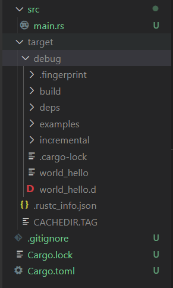
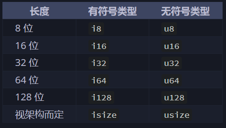

Rust 入门
Cargo与文件结构
cargo 是rust的包管理工具，帮助我们构建rust项目和编译运行
- 新建一个rust项目
cargo new [name] - 编译运行
cargo run - 编译
cargo build
生成的文件在/target/debug中，如下图

如我们所见，默认的build和run结果是bebug结果，这与qt项目等类似，特点是编译快但运行慢，我们也可以通过cargo build --release来构建release版本。
变量
变量声明规范
Rust中的变量遵循常规编程语言中的一系列规矩，例如不可与关键词重复等等，命名也需要遵循一定的规范
-
可以手动设置变量的可变性，其默认是不可变
-
let x = 5; 不可变 -
let mut x = 5; 可变 -
const x = 5;不可变
rust的编译器会给出warning当我们未使用一个变量的时候，此时我们如果确实需要这个变量，那么可以在其前面加一个下划线let _x = 5;
变量作用域
Rust允许在同一代码块中使用两个相同名称的变量，但是后者的出现就会遮蔽前者
变量类型
Rust对于变量类型是严格的，不允许不同类型的相互赋值。Rust中的基础类型就像Java里的Integer一样绑定了基础的操作，并且Rust的对象支持运算符重载
可以通过std::mem::size_of_val(&x)查看变量的内存大小
整数类型
Rust中我们一般希望能够给出整数具体的位数，但是在运行效率和便利性上，我们首选 "i32"

1 | |
在debug模式下会检查整数溢出，而release下不会，但我们可以使用一些整数自带的方法来显式地检查溢出
浮点数类型
浮点数类型比较简单，有两种 'f32' 和 'f64'。而浮点数的特殊性在于其不可以做精确比较（这个特性导致其不可做Map的key）
对于数学上的未定义行为，如负数做sqrt等，会返回Nan，我们可以通过is_nan()方法来进行显示判断
序列
Rust中的序列常用于循环体中，仅对于数字和字符
1 2 3 | |
1..5和1..=5的区别在于后者包括5
字符与字符串
Rust中单引号用于字符，双引号用于字符串，与C类似
所有权与引用
所有权（Ownership）是Rust里面一个重要的概念，是一个agent拥有可以访问或者销毁一个资源的权限。所有权是唯一且独占的。
1 2 3 4 5 6 | |
当test获取了该对象的所有权的时候，此时temp已经不再拥有所有权，此时如果取消注释，再次使用temp，就会报错；包括向函数里面传参的时候也一样
对于任何一个变量，Rust规定其在作用域中，仅仅可以拥有一个可变引用或者多个不可变引用，下面一个例子我们分别构建了一个可变和不可变引用
由于其本身所有权就已经存在可变和不可变两种，可变引用只能针对可变的对象，但是我们可以把不可变对象的所有权交给可变对象
1 2 3 4 5 6 7 8 9 10 11 12 13 14 | |
可变引用要显式地说明，如同cpp中的常量指针要显式说明一样，上述代码我们之所以可以创建多个可变引用，是因为这些可变引用都在各自函数的作用域中
RefCell 与 引用检查的局限性
Rust无法对于我们的引用做运行时检查，因此会有这样的代码
1 2 3 4 5 6 7 8 9 10 11 12 13 14 15 16 17 18 | |
让我们来解释一下上面这段代码，很显然，t1和t2绝对不可能是同一个变量的引用，但是由于编译器在做静态检查的时候无法分析分支结构的结果，其只能认为都是有可能发生的，因此会选择报错。
语句与表达式
在之前的很多语言中我们并不区分这两种概念，但是在有函数式特性的语言中我们需要对他们做出更严格的定义
- statement 是一个完整的操作，不返回值，要加分号
- expression 返回值，加分号
Rust实例
iteration invalidation
1 2 3 4 5 6 | |
让我们考虑C++的情形，上述代码其实非常的不安全，因为vector类型是存在扩容重整的，如果我们忘记使用迭代器而只是采用普通指针去访问，在扩容重整之后就会留给我们一个野指针
而在Rust编译器中，直接不允许执行上述代码，原因在于p作为一个指针，不可变地借用了v中的一个元素，而v需要push的时候，需要可变地借用v中所有元素，此时两个操作发生冲突
但是不可否认的是，虽然Rust编译器可以做很强大的检查，但是其不可避免地会错判一些本身是安全的多借用情形。对于此种问题我们往往通过稍微调整代码就可以解决